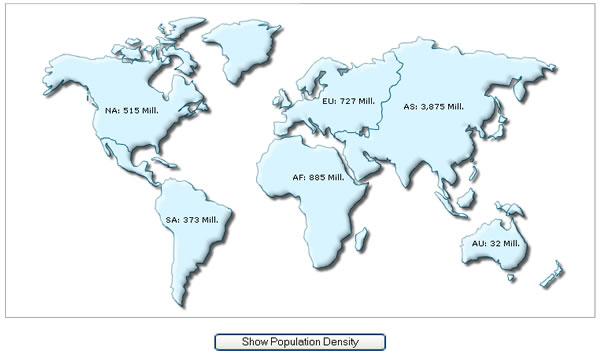
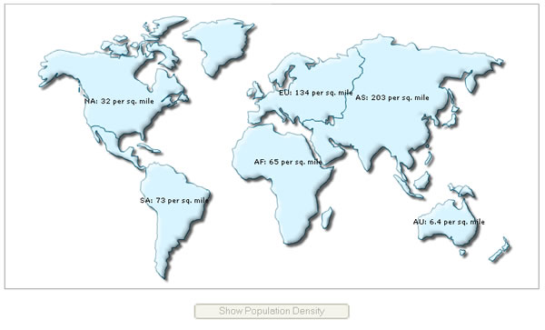

| FusionMaps, JavaScript and setDataXML Method |
You can change the data of a map at client side using the setDataXML method of map. Consider the following code contained in ChangeDataXML.html: Code examples discussed in this section are present in Download Package > Code > JavaScript folder.
|
| <HTML> <HEAD> <TITLE>FusionMaps & JavaScript - Updating map using setDataXML() Method</TITLE> <SCRIPT LANGUAGE="Javascript" SRC="../JSClass/FusionMaps.js"></SCRIPT> <SCRIPT LANGUAGE="JavaScript"> //updateMap method is called whenever the user clicks the button to //update the map. Here, we get a reference to the map and update it's //data using setDataXML method. function updateMap(DOMId){ //Get reference to map object using Dom ID var mapObj = getMapFromId("map1Id"); //Update it's data mapObj.setDataXML("<map animation='0' borderColor='005879' fillColor='D7F4FF' numberSuffix=' per sq. mile' includeValueInLabels='1' labelSepChar=': ' baseFontSize='9'><data><entity id='NA' value='32' /> <entity id='SA' value='73' /><entity id='AS' value='203' /><entity id='EU' value='134' /><entity id='AF' value='65' /><entity id='AU' value='6.4' /></data></map>"); //Disable the button this.document.frmUpdate.btnUpdate.disabled = true; } </SCRIPT> </HEAD> <BODY> <div id="map1div"> FusionMaps </div> <script language="JavaScript"> var map1 = new FusionMaps("../Maps/FCMap_World.swf", "map1Id", "750", "400", "0", "1"); map1.setDataXML("<map borderColor='005879' fillColor='D7F4FF' numberSuffix=' Mill.' includeValueInLabels='1' labelSepChar=': ' baseFontSize='9'><data> <entity id='NA' value='515' /><entity id='SA' value='373' /><entity id='AS' value='3875' /><entity id='EU' value='727' /><entity id='AF' value='885' /><entity id='AU' value='32' /></data></map>"); map1.render("map1div"); </script> <form name='frmUpdate'> <input type='button' value='Show Population Density' onClick='javaScript:updateMap();' name='btnUpdate'> </form> </BODY> </HTML> |
In the above code, we're first creating a World Map with DOM Id as map1Id. We also register it with JavaScript. We initially provide the following data to the map and ask it to render: <map borderColor='005879' fillColor='D7F4FF' numberSuffix=' Mill.' includeValueInLabels='1' labelSepChar=': ' baseFontSize='9'><data> <entity id='NA' value='515' /><entity id='SA' value='373' /><entity id='AS' value='3875' /><entity id='EU' value='727' /><entity id='AF' value='885' /><entity id='AU' value='32' /></data></map> Thereafter, we're creating a button, which when clicked would update the map with new XML data. The button calls the updateMap() JavaScript function when clicked. The updateMap() JavaScript function has the following code to update the map: |
| function updateMap(DOMId){ //Get reference to map object using Dom ID var mapObj = getMapFromId("map1Id"); //Update it's data mapObj.setDataXML("<map animation='0' borderColor='005879' fillColor='D7F4FF' numberSuffix=' per sq. mile' includeValueInLabels='1' labelSepChar=': ' baseFontSize='9'><data><entity id='NA' value='32' /> <entity id='SA' value='73' /><entity id='AS' value='203' /><entity id='EU' value='134' /><entity id='AF' value='65' /><entity id='AU' value='6.4' /></data></map>"); //Disable the button this.document.frmUpdate.btnUpdate.disabled = true; } |
Here, we first get a reference to the map using its DOM Id. We use the getMapFromId() JavaScript function to get the reference. Once we've got the reference, we simply call setDataXML method and pass the new XML data to this function. This method forces the map to read the new XML data and redraw accordingly. Finally, we disable the button, as it has already been clicked once. When you now view this page, you'll first see a World Map showing Population of different continents: |
|  |
| When you click on the button, you'll get the "Population Density" map as under. Also, the button is now disabled: |
|  |
The entire thing happens at client side, without any page refreshes or calls to server. Next, we'll see how to update the data of a map from a given URL, instead of XML. |